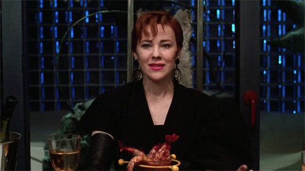
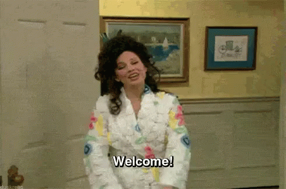
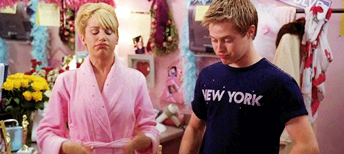
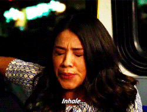
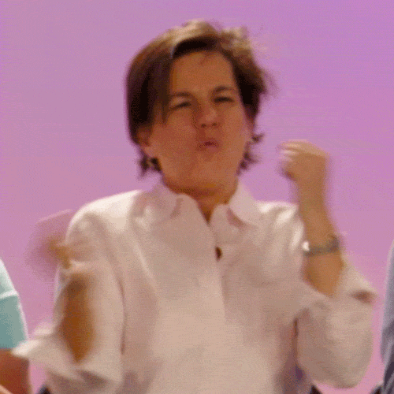

On your way to an audition and didn't have time to book a practice room before you left home? No fear! These five simple warm ups will give you enough ping, mask, and resonance that it will be able to be heard from Pearl Studios to Ripley Grier studios.
Today, we will go through 5 simple vocal warm ups.

Click on the image to begin
-

It's all about the CONSONANTS.
D, P,and K sounds. Just go through a series of stoplosives and you'll start getting your chords warm. -

Let's warm up those resonators! All you have to do is laugh like Fran from the iconic 90's sitcom The Nanny. Your mask (the area around your nose) will start to buzz--that's how you know it's working.
-

The lip trill is a fact, easy, effective way to get warmed up in about 10 seconds. You can do it on a siren, a scale, the song you're about to sing--you name it!
-

You have to BREATHE. Always in through your nose and out through your mouth. You'll need to be doing deep breaths to get through your song.
-

Lastly, get that chest resonater warmed up because people always forget to get that bass warmed up.
Thank you for visiting my tutorial.
Come back soon!!